CATEGORY: COLUMN // RETRO_PC_LOG
■ ポケトークWをAndroidスマホ化した件
最近ポケトークWを使っていなくて、押し入れの中に眠っていた。
Android8.1が搭載されていると箱に書いてあったので、androidスマホ化できると思った。それで、1時間ぐらい試行錯誤していたら成功したので方法を紹介する
グローバルSIMが切れていて、本体から延長を押す事で外部サイトにアクセスします。だから、グローバルSIMの有効期限が切れていないと、この方法ではできません(たぶん)
まずポケトークの設定から「通信プラン」を押します。
「本体から延長」を押します。
このような画面が出てきたら、黒い文字を長押しし、「共有」を押します。
メッセージを押します。
矢印ところに適当な電話番号を入力し下のメッセージ欄に適当な言葉を入力して送信します。
受話器のアイコンのボタンを押します。
メッセージの送信のときに入力した電話番号が表示されるので番号横のボタンで消し、
「使用統計情報」を押します。
左上の戻るボタンを押します。
android設定が出てきます。
一番下の項目にあるシステム>システムの一番下の項目にある端末情報を押し、ビルド番号を連打します。(デベロッパーになるまであと3ステップですと出てきたあとも連打し、これでデベロッパーになりましたと出てくればOK)
左上の戻るボタンで、端末情報に戻り開発者向けオプションを押します。
USB(type-c)ケーブルでポケトークWとPCを接続します。
コマンドプロンプトで「adb devices」と入力します。
ポケトークWで「このパソコンからのUSBデバッグを常に許可する」にチェックを入れてOKを押します。
成功すれば「device」が出てきます。(deviceが出て来ない場合、adb devicesを入力するところからやり直し)
「device」が表示されている場合、「adb shell settings put secure install_non_market_apps 1」と入力します
何も表示されずに再びコマンドが打てる状態になったら、https://apkpure.com/jp/nova-launcher/com.teslacoilsw.launcherからNova LauncherのAPKファイルをダウンロードします。コマンドプロンプトで「adb install 」と入力し、ダウンロードした「Nova Launcher」のAPKファイルをコマンドプロンプトにドラッグ&ドロップします。(adb install '/home/localline/ダウンロー ド/Nova Launcher_81038 (8.4.6)_APKPure.apk'のようにadb install +Nova LauncherのAPKファイルのパスが表示されたらOK)その後、Enterキーを押します。次のコマンドが打てる状態になるまで待ち、「Success」が表示されたら、電源ボタンを長押し、再起動を押して再起動します
Nova Launcherを押して常時を押します
その後、画面の指示に従いホーム画面のデザインの設定をします
このようなandroidスマホっぽい画面が出たらOKです
Android8.1が搭載されていると箱に書いてあったので、androidスマホ化できると思った。それで、1時間ぐらい試行錯誤していたら成功したので方法を紹介する
グローバルSIMが切れていて、本体から延長を押す事で外部サイトにアクセスします。だから、グローバルSIMの有効期限が切れていないと、この方法ではできません(たぶん)
必要なもの
グローバル通信切れのポケトークW
adbコマンド構築済みのPC
USB(type-c)転送ケーブル
やり方
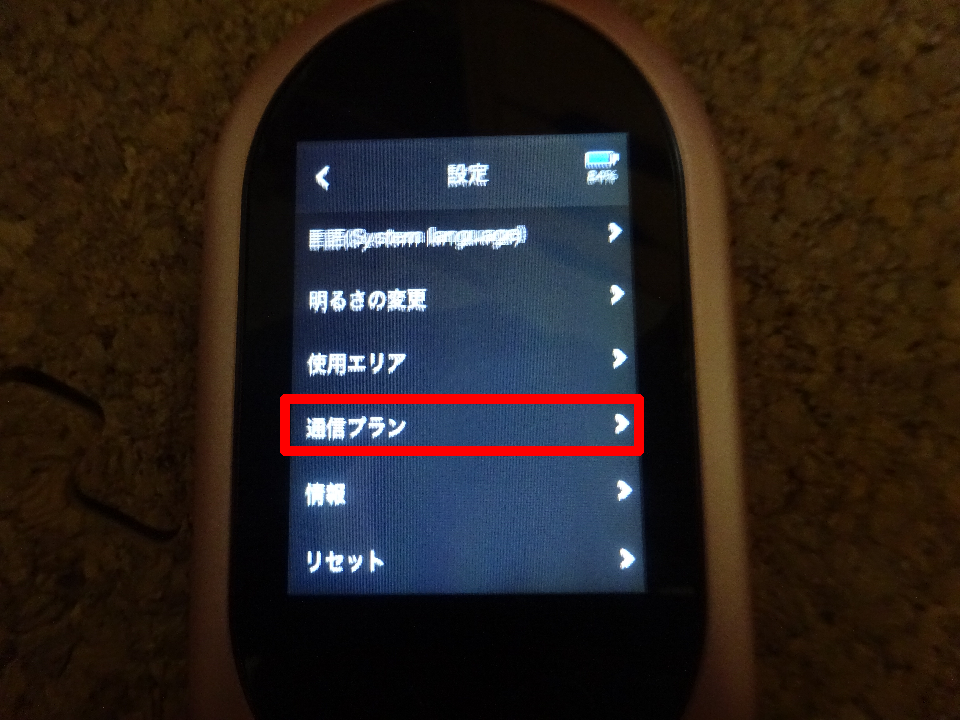
まずポケトークの設定から「通信プラン」を押します。
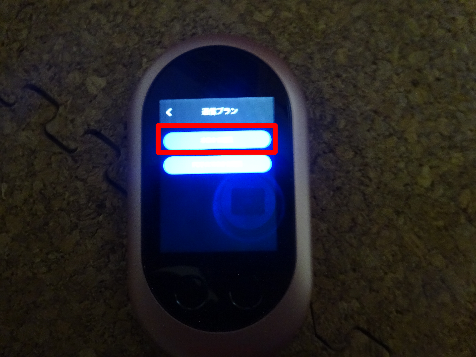
「本体から延長」を押します。
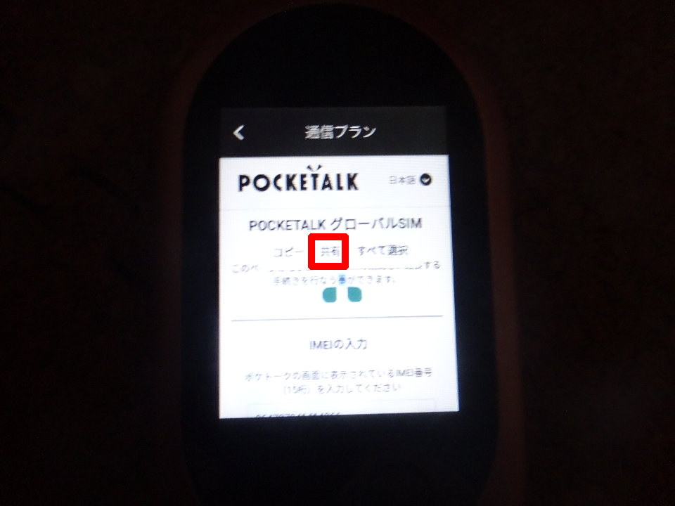
このような画面が出てきたら、黒い文字を長押しし、「共有」を押します。
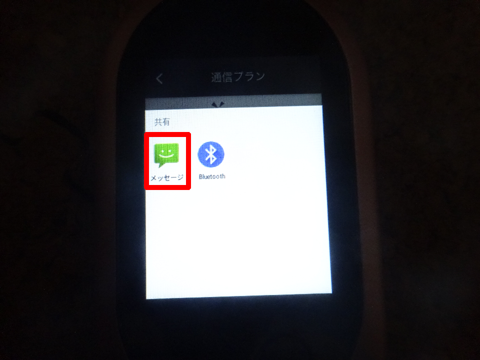
メッセージを押します。
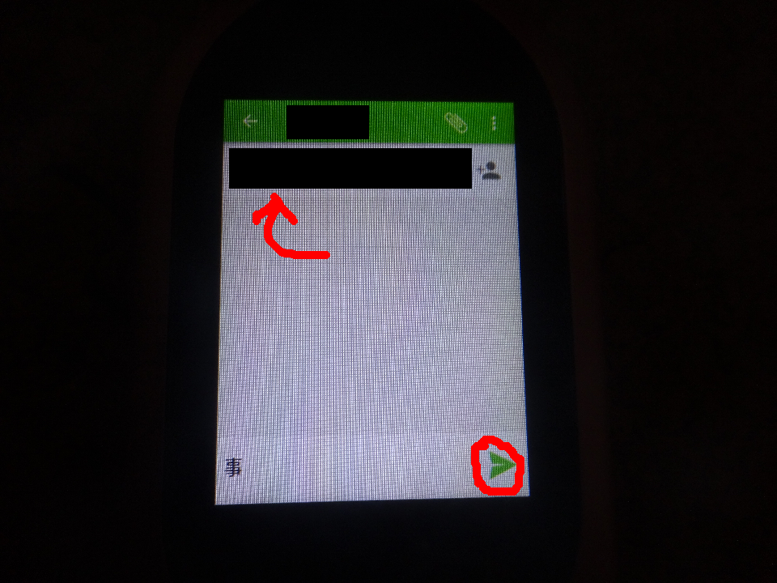
矢印ところに適当な電話番号を入力し下のメッセージ欄に適当な言葉を入力して送信します。
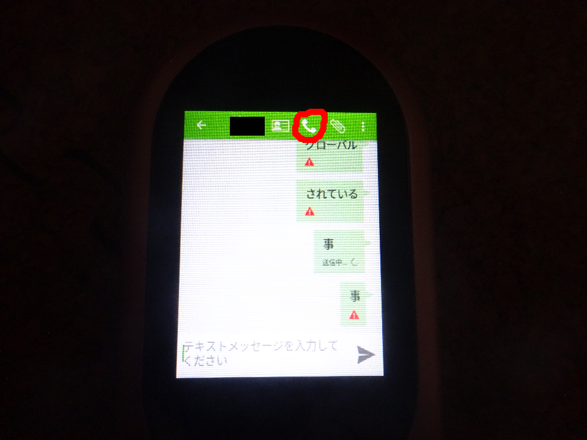
受話器のアイコンのボタンを押します。
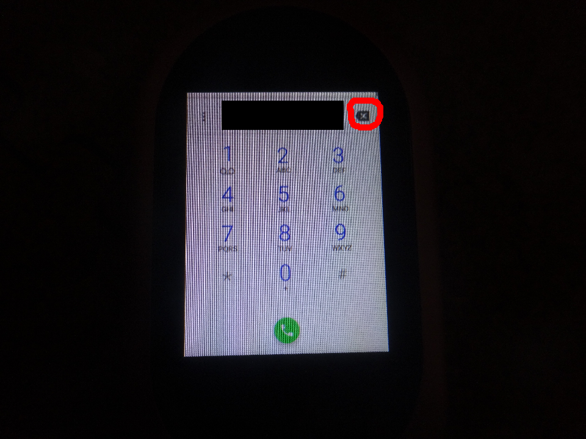
メッセージの送信のときに入力した電話番号が表示されるので番号横のボタンで消し、
*#*#4636#*#*
と入力します。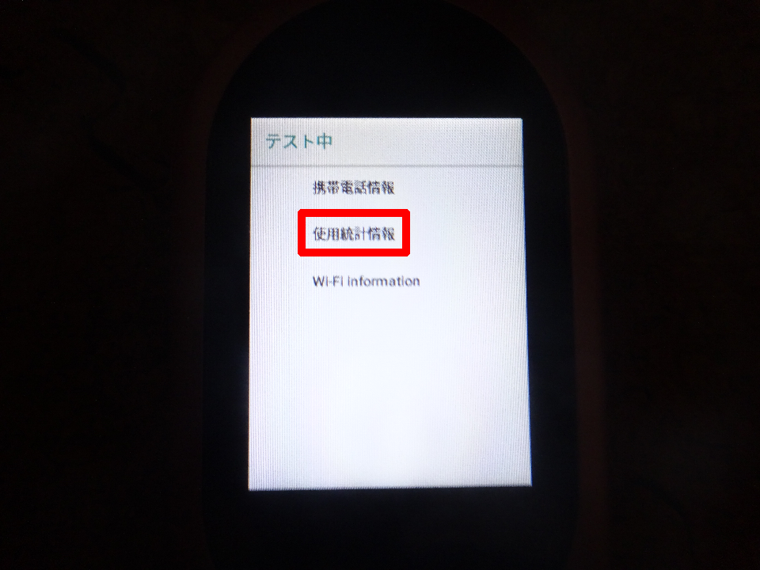
「使用統計情報」を押します。
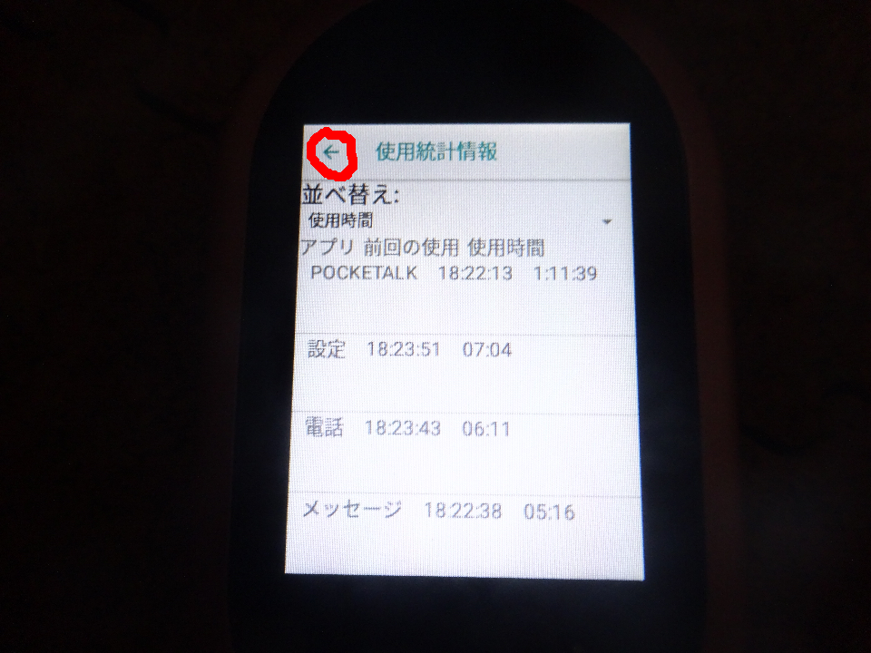
左上の戻るボタンを押します。
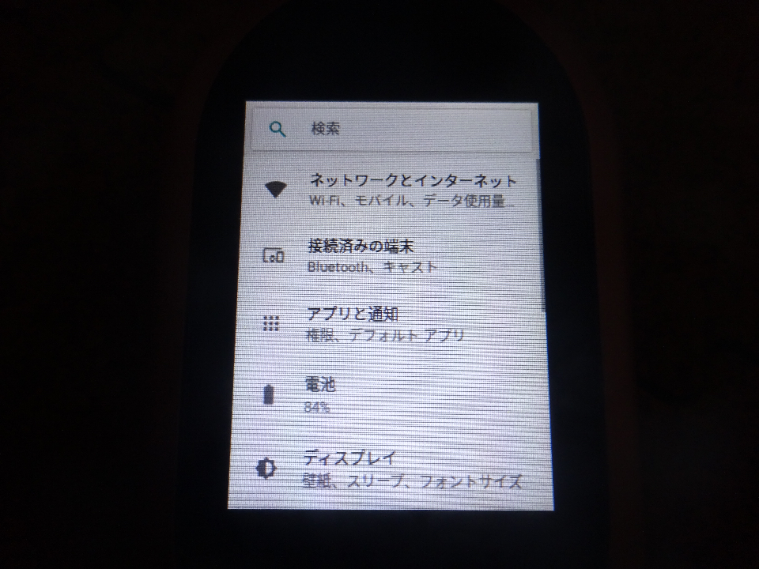
android設定が出てきます。
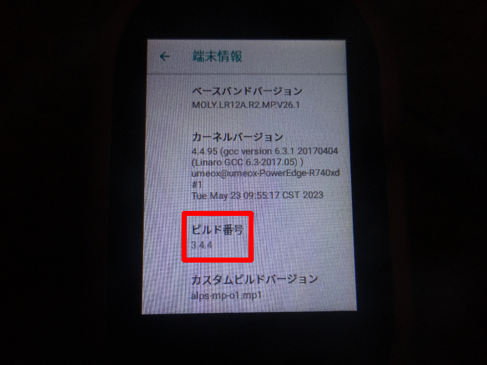
一番下の項目にあるシステム>システムの一番下の項目にある端末情報を押し、ビルド番号を連打します。(デベロッパーになるまであと3ステップですと出てきたあとも連打し、これでデベロッパーになりましたと出てくればOK)
左上の戻るボタンで、端末情報に戻り開発者向けオプションを押します。
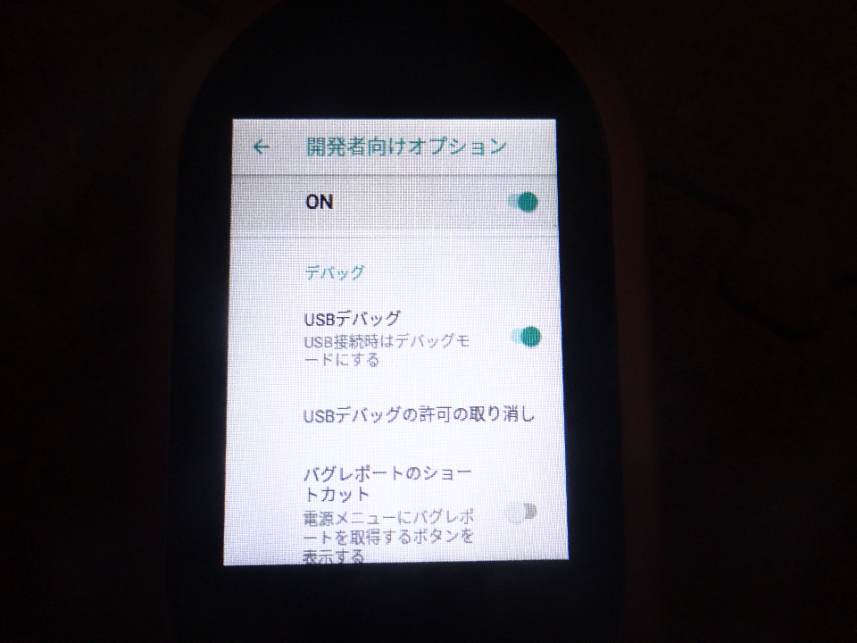
USBデバッグ
とスリープモードにしない
をオンにします。USB(type-c)ケーブルでポケトークWとPCを接続します。
コマンドプロンプトで「adb devices」と入力します。
ポケトークWで「このパソコンからのUSBデバッグを常に許可する」にチェックを入れてOKを押します。
成功すれば「device」が出てきます。(deviceが出て来ない場合、adb devicesを入力するところからやり直し)
「device」が表示されている場合、「adb shell settings put secure install_non_market_apps 1」と入力します
何も表示されずに再びコマンドが打てる状態になったら、https://apkpure.com/jp/nova-launcher/com.teslacoilsw.launcherからNova LauncherのAPKファイルをダウンロードします。コマンドプロンプトで「adb install 」と入力し、ダウンロードした「Nova Launcher」のAPKファイルをコマンドプロンプトにドラッグ&ドロップします。(adb install '/home/localline/ダウンロー ド/Nova Launcher_81038 (8.4.6)_APKPure.apk'のようにadb install +Nova LauncherのAPKファイルのパスが表示されたらOK)その後、Enterキーを押します。次のコマンドが打てる状態になるまで待ち、「Success」が表示されたら、電源ボタンを長押し、再起動を押して再起動します
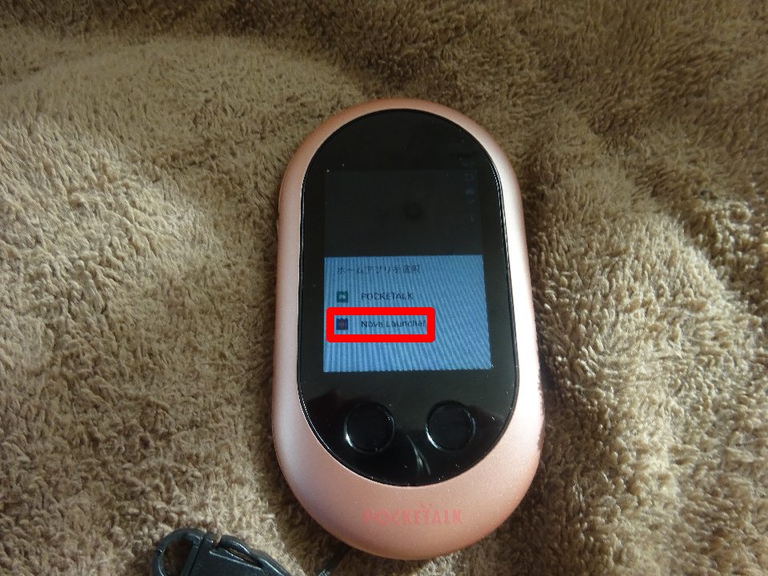
Nova Launcherを押して常時を押します
その後、画面の指示に従いホーム画面のデザインの設定をします
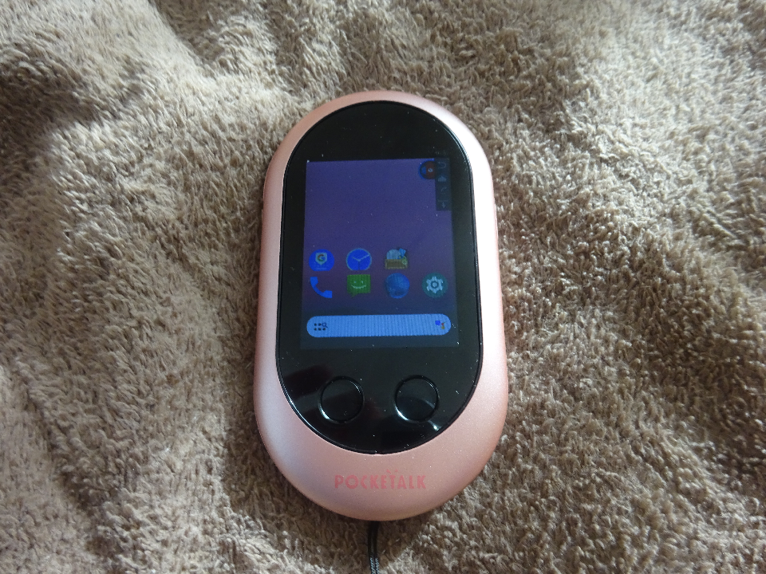
このようなandroidスマホっぽい画面が出たらOKです